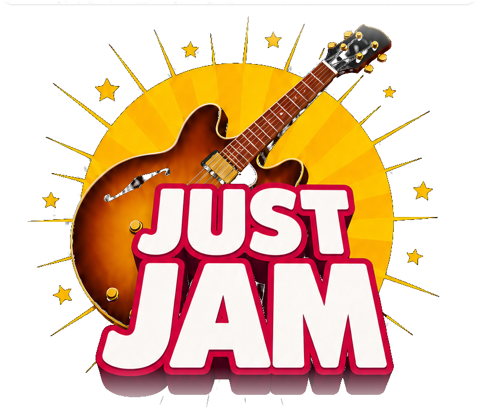
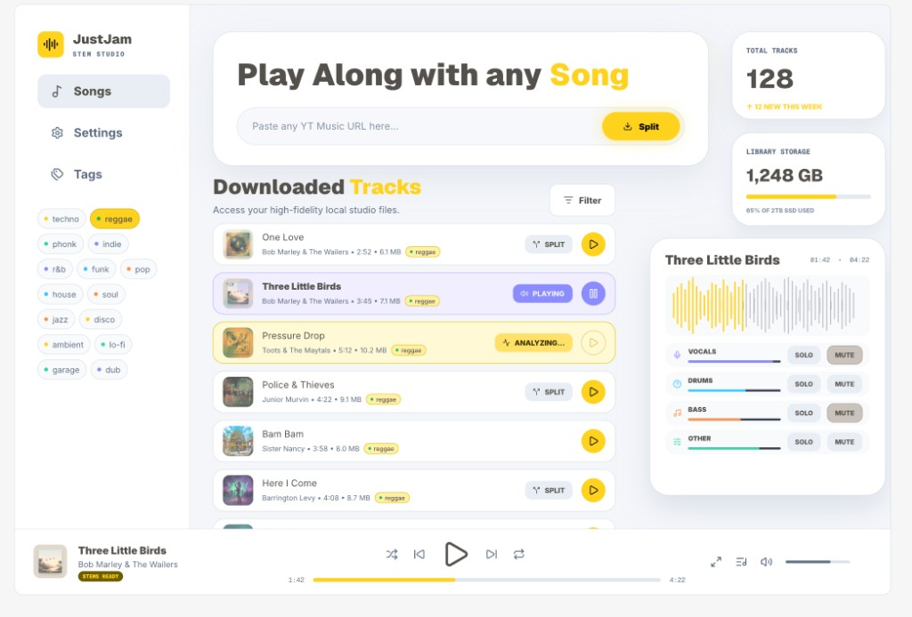
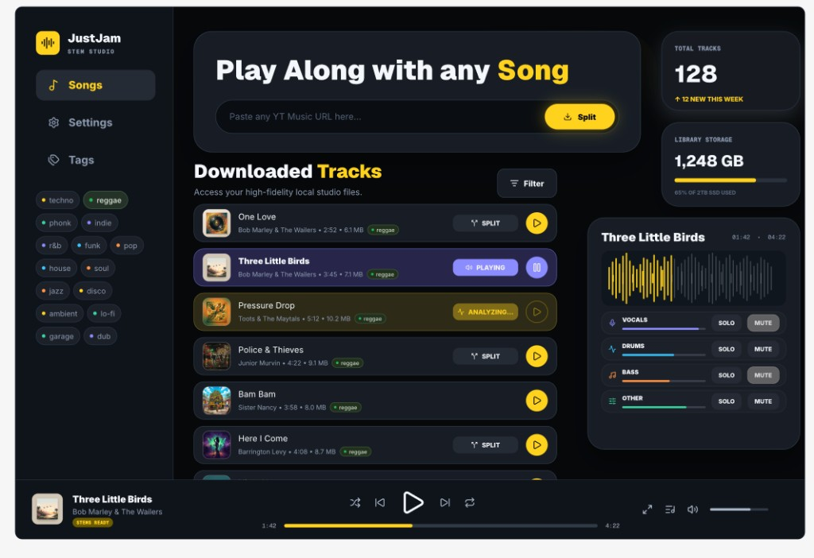

Split any YouTube Music song into individual stems you can solo, mute, and play along with on your Mac.
Free while in beta · No cloud account required


JustJam is built for musicians who want to learn songs faster, practice more deeply, and play along with every part. Split a YouTube Music song into controllable stems on your Mac using a local AI model you download once, then keep working fully offline with your private music collection — no cloud processing, no uploads, and complete control over your audio.
How it works
No DAW, no plugins, no backing-track hunting. Paste a song and start playing.
01
Drop in any YouTube Music URL. JustJam grabs a high-fidelity copy and files it in your local library.
02
A local AI model separates the track into four stems — vocals, drums, bass, and everything else — right on your Mac.
03
Mute the guitar and take its place. Solo the drums to learn the groove. Loop, mix, and play along with every part.
Why JustJam
Everything you'd want from an expensive studio workflow, without the studio — or the price tag.
Every song becomes vocals, drums, bass, and other — each with its own volume, solo, and mute.
Drop the part you play and step into the mix. Learn by ear with the parts isolated, at your own pace.
Download the stem-separation model once. After that, every split runs on your own hardware.
Once the model is on your Mac, JustJam works with no connection at all. Tour bus, cabin, basement — anywhere.
Your music collection stays on your machine. No cloud processing, no uploads, no accounts snooping on your library.
Skip expensive backing tracks, sample subscriptions, and heavyweight studio suites. One app, every song.
Local-first
Most stem tools ship your audio to a server. JustJam does the opposite: the AI comes to you.
A native Mac app — not a web page in a wrapper. Fast, tactile, and at home on Apple silicon.
Early access
JustJam is in active development. Join the waitlist for early builds, or try the interactive prototype right now.